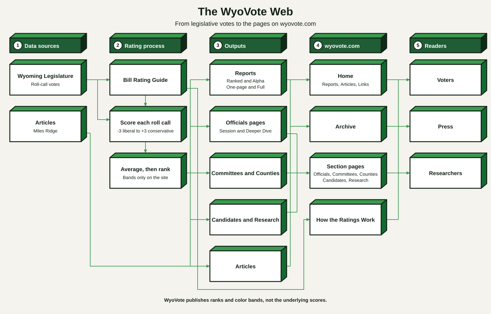

About
WyoVote publishes ratings of Wyoming state legislators based on their recorded votes. The diagram on this page shows how those votes become the reports and pages on this site.

Each recorded floor or committee roll-call vote is rated with the WyoVote Bill Rating Guide. A legislator’s result for a session is turned into a rank. Legislators are ranked from most conservative (Rank 1) and placed in color bands — Conservative, Moderate, or Liberal — that group those who voted most alike in that session. Who is eligible to be ranked, and how budget amendments are handled, is explained on the How the Ratings Work page.
Those ratings are used only to produce the ranks and bands. WyoVote publishes ranks and bands, not the underlying coefficients.
The ratings are based on recorded roll-call votes of the Wyoming Legislature.
WyoVote reports cover each General Session (odd-numbered years) and Budget Session (even-numbered years). For each year there is a Ranked report (by rating) and an Alpha report (by name), in both a one-page summary and a full report, with House and Senate sections. The home page shows the most recent years. Older reports, committee ratings, and county ratings are in the Archive.
The Officials section lists all 93 legislators, plus the statewide elected officers. Each legislator has a session page and a Deeper Dive page for a closer look at that member.
The Articles column presents current writing about Wyoming politics and elections.
WyoVote is an independent project. It is not a government site and is not tied to any political party, candidate, or political action committee.
The site is for Wyoming voters, journalists, and researchers who want a clear, consistent record of how legislators voted. Questions and corrections can be sent through the Contact page.